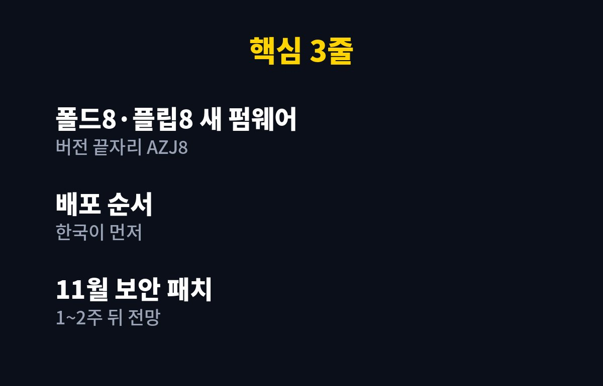
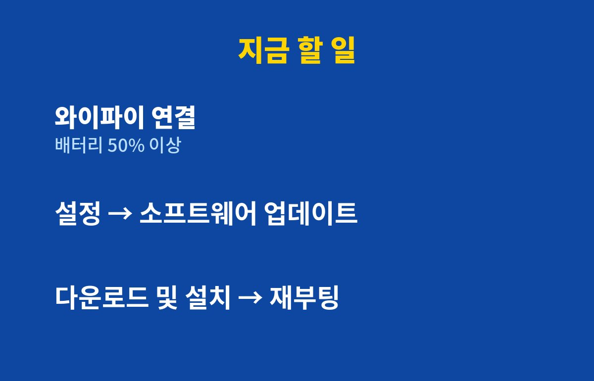

폴드8 업데이트가 한국에 먼저 풀렸습니다. 갤럭시 Z 폴드8·플립8용 새 펌웨어(버전 끝자리 AZJ8)가 국내에서 먼저 배포되기 시작했고, 11월 보안 패치는 1~2주 뒤에 나올 거라는 전망이 나왔어요.
폴드8이나 플립8 쓰고 있다면 궁금하실 거예요. 지금 바로 받아야 할까, 아니면 보안 패치까지 기다려야 할까? 결론부터 말하면 둘 다 받는 게 맞습니다. 이유를 짧게 풀어 볼게요.
삼성 폴더블은 새 펌웨어를 한국에서 먼저 푸는 경우가 꽤 있거든요. 안방 시장이라 반응을 먼저 보고, 문제가 없으면 다른 나라로 넓히는 식이죠. 그러니까 이번엔 한국 사용자가 "1등 테스터"인 셈입니다.
펌웨어 이름 끝 네 글자 AZJ8는 일종의 일련번호예요. 업데이트 화면에서 이 글자가 보이면 이번에 나온 그 버전이 맞습니다. 어려운 거 아니고, 그냥 "이번 판 번호"라고 생각하면 돼요.

여기서 헷갈리는 포인트. 이번 폴드8 업데이트와 11월 보안 패치는 같은 게 아닙니다. 이번 건 먼저 나온 펌웨어고, 11월 보안 패치는 그다음 1~2주 뒤에 따로 올 걸로 보여요.
보안 패치는 말 그대로 구멍 메우기예요. 해커가 노릴 수 있는 약점을 막아 주는 거죠. 요즘 해킹 소식이 하루가 멀다 하고 나오잖아요. 정부도 통신·데이터센터 같은 핵심 시설 보안 점검에 나섰을 정도니까요. 폰에서 은행 앱, 간편결제 다 쓰는 분이라면 보안 패치는 미루면 손해입니다.
받아도 됩니다. 다만 순서는 이렇게 가는 게 편해요.
| 구분 | 이번 펌웨어(AZJ8) | 11월 보안 패치 |
|---|---|---|
| 배포 시점 | 지금, 한국 먼저 | 1~2주 뒤 전망 |
| 대상 | 갤럭시 Z 폴드8·플립8 | 갤럭시 Z 폴드8·플립8 |
| 할 일 | 지금 받기 | 나오면 바로 또 받기 |
업데이트 한 번 받았다고 끝이 아니라는 거죠. 귀찮아도 두 번. 대신 한 번에 5분이면 끝나요.

1단계. 와이파이에 연결하고 배터리를 넉넉히(50% 이상 권장) 채워 둡니다. 설치 중에 꺼지면 골치 아프거든요.
2단계. 설정 → 소프트웨어 업데이트 → 다운로드 및 설치를 누릅니다.
3단계. 다운로드가 끝나면 설치 후 재부팅. 다시 켜지면 설정 → 휴대전화 정보 → 소프트웨어 정보에서 버전 끝자리가 AZJ8인지 확인하면 끝입니다.
혹시 아직 안 뜬다면? 순차 배포라 사람마다 시간이 달라요. 하루 이틀 뒤 다시 눌러 보면 됩니다. 조급해할 필요 없어요.
사진·연락처는 삼성 클라우드나 구글 계정에 백업해 두세요. 업데이트로 데이터가 날아가는 일은 드물지만, "드물다"가 "절대 없다"는 아니니까요. 그리고 출근길 지하철에서 데이터로 받는 건 비추. 용량이 꽤 클 수 있거든요.
여러분은 업데이트 뜨면 바로 받는 편인가요, 남들 후기 보고 받는 편인가요? 폴드8·플립8 11월 보안 패치 소식 나오면 바로 정리해 드릴게요. 구독해 두시면 놓치지 않습니다!
기사·공식 발표 기준이며 출시·가격 정보는 바뀔 수 있어요.